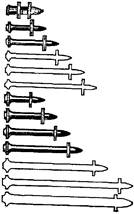
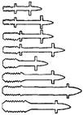

Министерство монтажных и
специальных
строительных работ СССР
ИНСТРУКЦИЯ
ПО ПРИМЕНЕНИЮ ПОРОХОВЫХ ИНСТРУМЕНТОВ
ПРИ ПРОИЗВОДСТВЕ МОНТАЖНЫХ И СПЕЦИАЛЬНЫХ
СТРОИТЕЛЬНЫХ РАБОТ
ВСН 410-80
ММСС СССР
|
Утверждены |
Согласованы с Госстроем СССР 16 июля 1979 г., ЦК профсоюза рабочих строительства и промышленности строительных материалов 18 июля 1979 г., Минэнерго СССР 26 июля 1979 г. |
ЭНЕРГОИЗДАТ 1981
СОДЕРЖАНИЕ
Инструкция разработана ЛенПЭО ВНИИпроектэлектромонтажа.
Распространяется на монтажные и специальные строительные работы с применением пороховых инструментов при использовании в качестве источника энергии монтажных патронов, снаряженных порохом. Инструкция не распространяется на огнестрельное оружие.
Предназначена для инженерно-технических работников и квалифицированных рабочих строительно-монтажных и специализированных монтажных организаций.
С введением в действие настоящей Инструкции отменяются инструкции МСН 189-68/ММСС СССР, МСН 202-69/ММСС СССР, МСН 234-70/ММСС СССР и «Положение о специалистах по эксплуатации монтажных пиротехнических инструментов», согласованное с Госстроем СССР 10 июля 1974 г.
|
Минмонтажспецстрой СССР |
Ведомственные строительные нормы |
ВСН 410-80 ММСС СССР |
|
Инструкция по применению пороховых инструментов при производстве монтажных и специальных строительных работ |
Взамен: МСН 202-69 ММСС СССР; МСН 189-68 ММСС СССР; МСН 234-70 ММСС СССР; «Положения о специалистах по эксплуатации монтажных пиротехнических инструментов» |
1.1. К пороховым инструментам относятся ручные монтажные механизированные инструменты, в которых в качестве источника энергии применяются патроны, снаряженные пороховым зарядом.
1.2. Для применения пороховых инструментов, а также для получения, использования и хранения патронов к ним не требуется специального разрешения органов Министерства внутренних дел СССР.
1.3. Пороховые инструменты высокопроизводительны, с их помощью можно выполнять различные монтажные операции, связанные с приложением ударных нагрузок: поршневую забивку дюбелей в строительные основания; пробивку отверстий в многопустотных железобетонных панелях перекрытий, стенках стальных электротехнических ящиков и коробов; оконцевание электрических жил кабелей; опрессовку соединительных муфт на стальных трубах для электропроводок.
1.4. При выстреле в патроннике ствола порохового инструмента давление пороховых газов достигает 200-350 МПа (2000-3500 кгс/см2), сила удара рабочего органа около 100-200 кН (10-20 тс), что предъявляет к надежности и безопасности инструмента повышенные требования.
1.5. Основные наиболее нагруженные детали пороховых инструментов (ствола, корпуса и т.п.) должны быть рассчитаны и испытаны на прочность.
1.6. Безопасность применения пороховых инструментов должна гарантироваться изготовителем и обеспечиваться путем выполнения требований технических условий и инструкций по эксплуатации, утвержденных в установленном порядке.
1.7. Допуск пороховых инструментов к эксплуатации должен осуществляться отделом технического контроля завода-изготовителя и отмечаться в формуляре, прикладываемом к комплекту каждого порохового инструмента. В формуляре должны быть приведены комплектность порохового инструмента и гарантии завода-изготовителя относительно срока хранения и эксплуатации.
|
Внесены Всесоюзным государственным научно-исследовательским и проектным институтом ВНИИпроектэлектромонтаж |
Утверждены Минмонтажспецстроем СССР 22 февраля 1980 г. |
Срок введения 1 июля 1980 г. |
1.8. Область применения, технические данные, требования безопасности и приемы работы с пороховыми инструментами должны быть изложены в «Техническом описании и инструкции по эксплуатации».
1.9. Разработка инструментов и организация их серийного производства должны производиться в соответствии с ГОСТ 15.001-73. Базовой организацией по стандартизации пороховых инструментов является Всесоюзный государственный научно-исследовательский и проектный институт ВНИИпроектэлектромонтаж Главэлектромонтажа Минмонтажспецстроя СССР.
2.1.1. К пороховым инструментам для забивки дюбелей относятся работающие по поршневой схеме монтажный пистолет ПЦ52-1 (рис. 1, а), выпускаемый по ТУ 3-741-74, и оправка ОДП-6 (рис. 1, б), выпускаемая по ТУ 36-992-75.
Рис. 1. Забивка дюбеля:
1 - поршень; 2 - амортизаторы; 3 - патрон; 4 - боевая пружина; 5 - курок; 6 - спусковой рычаг; 7 - зарядный шток; 8 - молоток; 9 - дюбель; 10 - закрепляемое изделие; 11 - строительное основание
2.1.2. Применяя пороховые инструменты для забивки дюбелей, можно крепить электротехническое, сантехническое и вентиляционное оборудование, гидро-, звуко- и теплоизоляционные материалы и конструкции, отделочные, кровельные, стеновые и другие материалы и изделия к различным строительным основаниям.
2.1.3. Пороховыми инструментами можно забивать дюбеля в поверхности несущих и ограждающих деталей и конструкций зданий и сооружений, выполненных из следующих материалов:
тяжелого (с заполнителем естественных каменных пород до марки М1200) бетона и железобетона до марки М400 включительно;
легкого (с искусственным заполнителем) бетона и железобетона от марки М100 и выше;
Таблица 1
|
Пистолет ПЦ52-1 |
Оправка ОДП-6 |
|
|
Габаритные размеры, мм |
385´65´135 |
300´75´55 |
|
Масса порохового инструмента, кг |
3,6 (с установленной магнитной обоймой) |
3,5 (с молотком) |
|
Масса комплекта порохового инструмента (в состоянии поставки), кг |
12 |
6 |
|
Используемые патроны |
Д, К |
К |
|
Длины забиваемых дюбелей, мм |
27-100 |
40; 50 |
|
Гарантийное количество выстрелов |
25000 |
5500 |
|
Запирание патрона в момент выстрела |
Инерционное |
|
|
Способ воспламенения патрона |
Самовзводным ударно-спусковым механизмом |
Ударом молотка по зарядному штоку |
|
Экстракция стреляной гильзы из патронника |
Полуавтоматическая при открывании |
|
|
Блокирование от случайного выстрела |
При недостаточной силе поджатия к основанию; при прижатии с перекосом на угол более 10°; при незакрытом пистолете; при падении с высоты до 1,5 м |
при незакрытой оправке; при падении с высоты до 1,5 м |
|
Защита от возможного рикошета и разлета мелких частиц поверхности пристрелки (бетонная крошка, окалина и т.п.) |
Магнитной обоймой или пружинным прижимом; средствами индивидуальной защиты |
Фланцем оправки, средствами индивидуальной защиты |
кирпичной (оштукатуренной и неоштукатуренной) кладки, выполненной из сплошного глиняного (красного) или силикатного (белого) кирпича до марки М150 включительно;
сортового (прокатанного или гнутого) стального профиля из стали с пределом прочности до 450 МПа (45 кгс/мм2).
2.1.4. Основные технические данные пороховых инструментов для забивки дюбелей приведены в табл. 1.
Рис. 2. Неразъемные крепления дюбелями-гвоздями:
а - трубопровода к бетонному основанию; б - деревянной детали к кирпичу; в - профильного стального настила к стальному основанию из сортового проката; г - деревянной детали к стальному основанию из сортового проката
2.1.5. В пороховых инструментах для поршневой забивки дюбелей предусмотрено применение дюбелей-гвоздей и дюбелей-винтов различных длин со стержнями различных диаметров.
2.1.6. Неразъемное крепление конструкций осуществляется при помощи дюбелей-гвоздей, которые, обладая высокими твердостью и прочностью, пробивают закрепляемое изделие или вспомогательную деталь без предварительного выполнения в них отверстия, внедряются в строительное основание и закрепляются в нем (рис. 2).
Таблица 2
|
Диаметр стержня, мм |
Длина дюбеля, мм |
Обозначение по ТУ 14-4-794-77 |
|
|
 |
4,5 |
27 |
ДГС 4,5´27 |
|
3,7 |
30 |
ДГПШ 3,5´30 |
|
|
3,7 |
40 |
ДГПШ 3,7´40 |
|
|
3,7 |
50 |
Выпуск планируется с 1981 г. |
|
|
3,7 |
60 |
||
|
3,7 |
70 |
||
|
4,5 |
30 |
ДГПШ 4,5´30 |
|
|
4,5 |
40 |
ДГПШ 4,5´40 |
|
|
4,5 |
50 |
ДГПШ 4,5´50 |
|
|
4,5 |
60 |
ДГПШ 4,5´60 |
|
|
4,5 |
80 |
Выпуск планируется с 1981 г. |
|
|
4,5 |
100 |
||
|
6,8 |
100 |
2.1.7. Дюбеля-гвозди для поршневой забивки представлены в табл. 2. Дюбеля-гвозди, серийно выпускаемые промышленностью, изображены объемно.
2.1.8. С помощью дюбелей-винтов можно осуществлять съемное крепление деталей и конструкций. В этом случае деталь (конструкция) должна иметь заранее выполненные соответствующие отверстия и закрепляться стандартными гайками, навинчиваемыми на резьбу дюбелей-винтов. Дюбеля-винты для поршневой забивки, выпуск которых планируется с 1981 г., представлены в табл. 3.
Таблица 3
|
Резьба |
Длина дюбеля, мм |
Диаметр стержня, мм |
Длина резьбы, мм |
Планируемое обозначение |
|
|
 |
М4 |
35 |
3,7 |
10 |
ДВП М4´35 |
|
М4 |
45 |
3,7 |
10 |
ДВП М4´45 |
|
|
М6 |
45 |
3,7 |
15 |
ДВП М6´45 |
|
|
М6 |
55 |
3,7 |
15 |
ДВП М6´55 |
|
|
М8 |
40 |
4,5 |
15 |
ДВП М8´40 |
|
|
М8 |
55 |
4,5 |
20 |
ДВП М8´55 |
|
|
М8 |
70 |
6,8 |
20 |
ДВП М8´70 |
|
|
М10 |
60 |
5,5 |
25 |
ДВП М10´60 |
2.1.9. В строительное основание дюбель должен входить соосно движению поршня. Для этой цели, а также для фиксирования в инструменте перед выстрелом дюбель снабжен центрирующим элементом - металлической шайбой или полиэтиленовым наконечником. Насадка на дюбель металлической шайбы производится на заводе-изготовителе. Полиэтиленовый наконечник должен насаживать рабочий, применяющий пороховой инструмент.
2.1.10. Область применения поршневой забивки серийно выпускаемых дюбелей-гвоздей приведена в табл. 4.
2.1.11. При соблюдении условий, приведенных в табл. 4, должны обеспечиваться вхождение и надежное закрепление всех забиваемых дюбелей.
В отдельных случаях (как правило, в строительных основаниях высокой прочности) могут происходить изгибы и изломы стержней дюбелей и их незакрепления.
Таблица 4
|
Материал и толщина пристреливаемой детали |
Рекомендуемый дюбель |
|
|
Тяжелый бетон и железобетон |
Сталь толщиной 0,8-2 мм; алюминий и дюралюминий толщиной 1-3 мм |
ДГПШ 3,7´30 или ДГПШ 4,5´30 |
|
То же |
Сталь толщиной 1-4 мм; алюминий и дюралюминий толщиной 2-6 мм; низкопрочный материал (фанера, ДСП, сухая штукатурка и т.п.) толщиной до 10 мм |
ДГПШ 3,7´40 или ДГПШ 4,5´40 |
|
» » |
Низкопрочный материал (дерево, ДСП, ДВП и т.п.) толщиной 10-25 мм |
ДГПШ 4,5´50 |
|
» » |
Низкопрочный материал (дерево и т.п.) толщиной 25-35 мм |
ДГПШ 4,5´60 |
|
Неоштукатуренная кирпичная кладка; оштукатуренный тяжелый бетон и железобетон |
Сталь толщиной 0,8-2 мм; алюминий и дюралюминий толщиной 1-3 мм |
ДГПШ 3,7´40 или ДГПШ 4,5´40 |
|
То же |
Низкопрочный материал (дерево, ДСП, ДВП и т.п.) толщиной 10-25 мм |
ДГПШ 4,5´60 |
|
» » |
Сталь толщиной 1-4 мм; алюминий и дюралюминий толщиной 2-6 мм; низкопрочный материал (фанера, ДСП, сухая штукатурка и т.п.) толщиной до 10 мм |
ДГПШ 4,5´50 |
|
Оштукатуренная кирпичная кладка; легкий бетон и железобетон |
Сталь толщиной 1-4 мм; алюминий и дюралюминий толщиной 2-6 мм; низкопрочный материал (фанера, ДСП, сухая штукатурка и т.п.) толщиной до 10 мм |
ДГПШ 4,5´00 |
|
Сталь сортовая толщиной 6-10 мм |
То же |
ДГПШ 4,5´30 |
|
То же |
Низкопрочный материал (дерево, ДСП, ДВП и т.п.) толщиной 10-25 мм |
ДГПШ 4,5´40 |
|
Сталь сортовая толщиной 6-12 мм |
Сталь толщиной 0,8-4 мм; пакет стальных листов общей толщиной до 6 мм; алюминий и дюралюминий толщиной 1-8 мм |
ДГС 4,5´27 |
2.1.12. Если количество незакрепленных дюбелей превышает 20 % общего количества забитых дюбелей (предельно допустимое количество отказов), поршневая забивка дюбелей нецелесообразна.
2.1.13. При увеличении количества незакреплений дюбелей следует проверить качество дюбелей на соответствие техническим условиям.
2.1.14. Перед пристрелкой стальных деталей или при забивке дюбелей в стальное основание необходимо убедиться, что прочность и твердость дюбеля выше, чем материала, в который он должен быть забит.
2.1.15. Проверку следует проводить кернением - ударом молотка по шляпке дюбеля, установленного острием к пристреливаемой стальной детали или основанию. Если острие дюбеля тупится, его поршневая забивка в это основание или деталь запрещается.
2.1.16. При соблюдении условий крепления согласно табл. 3 допускаемая нагрузка в осевом направлении на дюбель, забитый:
в стену и пол из тяжелого бетона и железобетона, - не более 500 Н (50 кгс);
в потолок из тяжелого бетона и железобетона, - не более 150 Н (15 кгс);
в стену из сплошного красного и белого кирпича, - не более 200 Н (20 кгс);
в строительное основание из легкого бетона, - не более 150 Н (15 кгс);
в строительное основание из сортовой стали, - не более 1500 Н (150 кгс) для дюбелей ДГС; не более 800 Н (80 кгс) для дюбелей ДГПШ.
2.1.17. Наименьшее расстояние от точки забивания дюбеля до ближайшего края строительного основания должно быть:
100 мм для бетонного, железобетонного и кирпичного оснований;
20 мм для стального основания.
2.1.18. При креплении на неоштукатуренной поверхности кирпичной клади дюбель необходимо забивать в центр кирпича.
2.1.19. Наименьшее расстояние между соседними дюбелями, забиваемыми в строительное основание, должно быть 50 мм для бетонного и железобетонного оснований; 20 мм для стального основания.
2.1.20. Наименьшая ширина элемента пристреливаемого изделия должна быть 20 мм для стальных полосовых деталей (лапка аппарата, шина заземления); 40 мм для деревянных деталей (рейка, брус).
2.1.21. Наименьшая толщина строительного основания в месте забивания дюбеля должна быть 80 мм для бетонного и железобетонного оснований, но не менее длины дюбеля плюс 30 мм; 6 мм для основания из сортовой стали.
2.1.22. Запрещается крепить на дюбелях для поршневой забивки оборудование, которое при эксплуатации подвержено динамическим и вибрационным нагрузкам.
2.2.1. К пороховым инструментам для пробивки отверстий относятся инструмент ИПО-6 (рис. 3, а), выпускаемый по ТУ 36-1987-76, для пробивки отверстий под трубы в стенках стальных протяжных ящиков и коробок электротехнического назначения и ударная колонка УК-6 (рис. 3, б), выпускаемая по ТУ 36-2154-78, для пробивки отверстий в многопустотных железобетонных панелях потолочных перекрытий при монтаже электропроводок.
2.2.2. Инструмент ИПО-6 можно также использовать для пробивки отверстий в тонколистовом металле на расстоянии от края листа до центра отверстия не более 130 мм.
Рис. 3. Пробивка отверстий:
1 - матрица; 2 - пуансон; 3 - патрон; 4 - боек; 5 - ударник; 6 - боевая пружина; 7 - пуговка; 8 - монтажное изделие; 9 - пробойник; 10 - муфта; 11 - втулка; 12 - панель перекрытия
2.2.3. С помощью пороховых инструментов ИПО-6 и УК-6 отверстия пробиваются соответственно пуансоном и пробойником, разгоняемых давлением пороховых газов.
2.2.4. Основные технические данные пороховых инструментов для пробивки отверстий приведены в табл. 5.
2.2.5. Центры отверстий, пробиваемых в материале, размечаются линиями длиной 80-120 мм:
Таблица 5
|
Инструмент ИПО-6 |
Колонка УК-6 |
|
|
Габаритные размеры, мм |
400´280´90 |
1800´110´70 |
|
Масса порохового инструмента, кг |
8,8 |
7,9 |
|
Масса комплекта порохового инструмента в инвентарном футляре (в состоянии поставки), кг |
19,1 |
10,5 |
|
Используемые патроны |
Д4 |
МПУ-1 |
|
Пробиваемый материал |
Листовая сталь с пределом прочности до 450 МПа (45 кгс/мм2) |
Панели из железобетона по ГОСТ 9561-76 |
|
Толщина пробиваемого материала, мм |
До 2 |
До 50 |
|
Диаметр пробиваемых отверстий, мм |
23; 28; 35; 44; 50; 62 |
20-40 |
|
Гарантийное количество выстрелов |
3000 |
6500 |
|
Запирание патрона в стволе |
Жесткое |
|
|
Способ воспламенения патрона |
Ручным оттягиванием ударника и наколом капсюля под действием разжимающейся боевой пружины |
Ударом бойка по капсюлю при ручном перемещении муфты со штоком |
|
Экстракция стреляной гильзы из патронника |
Ручным поворотом экстрактора |
Вручную, шомполом с зацепами |
|
Регулирование мощности |
Автоматическое |
Не предусмотрено |
|
Отдача при выстреле |
Воспринимается массой инструмента и упругой частью корпуса |
Воспринимается массой колонки и руками рабочего |
|
Блокировка от случайного выстрела |
При недоввинченном затворе; при падении с высоты до 1,5 м |
|
|
Защита от возможного разлета мелких частиц обрабатываемого материала (бетонной крошки, окалины, заусенцев и т.п.) |
Направителем инструмента; средствами индивидуальной защиты |
Направляющим цилиндром колонки; средствами индивидуальной защиты |
для ИПО-6 - обычной чертилкой по металлу;
для колонки УК-6 - с пола специальным шаблоном-чертилкой с удлиненной ручкой. При настройке шаблона следует обеспечивать пробивку отверстий по центру пустотного канала бетонной панели.
2.3.1. К пороховым инструментам для оконцевания электрических кабелей относятся прессы ППО-95М (рис. 4, а) и ППО-240 (рис. 4, б), выпускаемые по ТУ 36-1518-75 и 36-2128-78 соответственно. Применяются для выштамповки контактной лапки с отверстием под присоединительный болт на однопроволочных алюминиевых жилах электрических кабелей (ГОСТ 16442-70*, 18409-73* и 18410-73*), используемых в электроустановках напряжением до 10 кВ.
Рис. 4. Оконцевание кабеля прессом:
1 - матрица; 2 - пуансон; 3 - патрон; 4 - боек; 5 - ударник; 6 - боевая пружина; 7 - пуговка; 8 - жила кабеля
2.3.2. Оконцевание жилы кабеля производится за один выстрел. Контактная лапка на жиле выштамповывается матрицей и пуансоном, разгоняемыми давлением пороховых газов.
2.3.3. Основные технические данные пороховых инструментов для оконцевания жил кабелей приведены в табл. 6.
2.3.4. Для получения качественного оконцевания сменный рабочий инструмент прессов необходимо выбирать с учетом сечений и размеров оконцовываемых жил, приведенных в табл. 7.
Таблица 6
|
Пресс ППО-95 |
Пресс ППО-240 |
|
|
Габаритные размеры, мм |
320´80´80 |
280´90´90 |
|
Масса порохового инструмента, кг |
4,9 |
5,2 |
|
Масса комплекта порохового инструмента в инвентарном футляре (в состоянии поставки), кг |
9,9 |
9,3 |
|
Используемые патроны |
Д4 |
МПУ-3 |
|
Сечения спрессовываемых жил, мм2 |
25; 35; 50; 70; 95 |
120; 150; 185; 240 |
|
Гарантированное количество выстрелов |
5000 |
3200 |
|
Запирание патронов в стволе |
Жесткое |
|
|
Способ воспламенения патрона |
Ручным оттягиванием ударника и наколом капсюля под действием разжимающейся боевой пружины |
|
|
Экстракция стреляной гильзы |
Ручным поворотом экстрактора |
Полуавтоматическая при вывинчивании затвора |
|
Регулировка мощности |
Автоматическая |
|
|
Отдача при выстреле |
Воспринимается массой инструмента и руками рабочего |
|
|
Блокировка от случайного выстрела |
При недоввинченном затворе; при падении с высоты до 1,5 м |
При падении с высоты до 1,5 м |
|
Защита от возможного разлета мелких частиц обрабатываемого материала (облоя, заусенцев и т.п.) |
Защитным кожухом |
|
2.4.1. К пороховым инструментам для соединения стальных труб относится пресс ППСТ-33М (рис. 5), применяемый для выполнения уплотненного электропроводного соединения стальных труб с наружным диаметром 20-33,5 мм.
2.4.2. Соединение осуществляется методом ударного обжатия соединительной муфты длиной 40 мм, изготовленной из электросварных труб по ГОСТ 10704-76 или ТУ 14-3-729-78, большего, чем у соединяемых труб, диаметра или раструба, выполненного на конце одной из соединяемых труб.
Таблица 7
|
Диаметр жилы одножильного кабеля, мм |
Наименьший и наибольший размеры кабеля, мм |
Сечение жилы кабеля, мм2, основного/нулевого |
Наименьший и наибольший размеры четырехжильного кабеля, мм |
||||
|
двухжильного |
трехжильного |
с жилами одинакового сечения |
с четвертой (нулевой) круглой жилой |
с четвертой (нулевой) однопроволочной секторной жилой |
|||
|
25 |
5,7 |
3,81-8,19 |
4,68-7,90 |
50/25 |
7,53-10,31 |
7,30/5,7-10,44/5,7 |
7,08/5,97-10,39/6,22 |
|
35 |
6,7 |
4,54-9,59 |
5,58-9,35 |
70/25 |
8,73-11,89 |
8,41/5,7-12,32/5,7 |
8,28/6,39-12,46/5,75 |
|
50 |
8,0 |
5,46-11,41 |
6,67-11,09 |
70/35 |
- |
- |
8,39/7,09-12,34/7,30 |
|
70 |
9,42 |
6,47-13,33 |
7,69-13,04 |
95/35 |
10,26-14,06 |
9,81/6,7-14,42/6,7 |
9,67/7,55-14,56/6,80 |
|
95 |
10,96 |
7,59-15,64 |
8,99-15,32 |
120/35 |
11,54-15,83 |
10,91/6,7-16,35/6,7 |
10,75/7,55-16,49/6,80 |
|
120 |
12,28 |
8,52-17,60 |
10,13-17,19 |
120/70 |
- |
- |
11,06/9,95-16,19/10,58 |
|
150 |
13,68 |
9,55-19,63 |
11,35-19,21 |
150/50 |
12,92-19,25 |
12,41/8,0-18,09/8,0 |
12,09/9,39-18,42/7,81 |
|
185 |
15,2 |
- |
12,64-21,22 |
150/70 |
- |
- |
12,44/10,44-18,25/10,58 |
|
240 |
17,3 |
- |
14,43-23,93 |
185/50 185/70 |
15,03-19,25 |
13,64/8,0-20,28/8,0 |
13,32/9,86-20,60/7,35 11,32/11,01-20,60/9,42 |
Рис. 5. Соединение труб прессом ППСТ-33М:
1 - матрица; 2 - пуансон; 3 - патрон; 4 - боек; 5 - ударник; 6 - боевая пружина; 7 - пуговка; 8 - стальная труба (муфта, раструб)
2.4.3. Основные технические данные пресса ППСТ-33М приведены ниже:
Габаритные размеры, мм.............................................. 380´90´80
Масса порохового инструмента в рабочем
положении, кг................................................................ 6
Масса комплекта порохового инструмента в
инвентарном футляре (в состоянии поставки), кг..... 10
Используемые патроны................................................ МПУ-1 и МПУ-2
Размеры соединяемых труб, мм:
наружный диаметр электросварных труб по ГОСТ
10704-76 и ТУ 14-3-729-78............................................ 20; 25; 32
условный проход (наружный диаметр)
водогазопроводных труб по ГОСТ 3262-75............... 15 (21,3); 20 (26,8); 25 (33,5)
Гарантированное количество выстрелов................... 10000
Запирание патрона в стволе......................................... Жесткое
Способ воспламенения патрона.................................. Ручным оттягиванием ударника
и наколом капсюля под действием разжимающейся боевой пружины
Экстракция стреляной гильзы..................................... Ручная, шомполом с зацепами
Отдача при выстреле.................................................... Воспринимается массой инструмента и руками рабочего
Блокировка от случайного выстрела.......................... При недоввинченном затворе; при падении с высоты до 1,5 м
2.4.4. Для получения качественного (за один выстрел) соединения труб патрон и соответствующие пуансон и матрица должны выбираться в соответствии с «Техническим описанием и инструкцией по эксплуатации» с учетом наружного диаметра и вида соединяемых труб.
2.5.1. Порядок хранения, подготовки к работе и выдачи пороховых инструментов должен соответствовать требованиям «Положения об организации инструментального хозяйства в строительстве», утвержденного Госстроем СССР 4 мая 1971 г.
2.5.2. Все места и условия хранения пороховых инструментов должны исключать их хищение, использование не по назначению, порчу от попадания влаги и устанавливаться приказом по монтажной организации (управлению, участку).
2.5.3. До начала эксплуатации пороховые инструменты должны храниться в состоянии поставки в складских закрытых помещениях строительно-монтажных организаций с соблюдением климатических факторов воздействия внешней среды по группе С (ГОСТ 15150-69).
2.5.4. Хранить пороховые инструменты при ежедневной выдаче для работы необходимо в инструментально-раздаточных пунктах (ИРП). При этом в ИРП допустимо хранить до четырех пороховых инструментов совместно с патронами в месте, оборудованном в соответствии с требованиями, установленными для монтажных патронов (раздел 4 настоящей Инструкции).
2.5.5. Пороховые инструменты для производства работ нужно выдавать только на основании предварительно оформленного наряда-допуска (приложение 1). Выдачу пороховых инструментов для работы по наряду-допуску и их возврат по окончании работ следует регистрировать в «Ведомости выдачи и возврата пороховых инструментов (приложение 2).
2.5.6. Данные закрытых нарядов-допусков должны использовать соответствующие службы строительно-монтажной организации при инвентаризации патронов, а также служба главного механика для учета работы порохового инструмента и для заполнения формуляра.
2.5.7. Для постоянного контроля работоспособности и безопасности эксплуатации пороховых инструментов служба главного механика должна проверять их техническое состояние. Проверку следует производить 1 раз в 0,5 года, а также после производства половины гарантированного количества выстрелов, установленного для данного типа порохового инструмента.
2.5.8. Результаты проверки порохового инструмента с указанием номеров нарядов-допусков необходимо заносить в формуляр порохового инструмента.
2.5.9. Возникшие при эксплуатации неисправности и задержки в работе пороховых инструментов, которые включены в «Перечень возможных неисправностей», приведенный в «Техническом описании и инструкции по эксплуатации», должен устранять рабочий, применяющий данный пороховой инструмент, непосредственно после обнаружения.
2.5.10. При возникновении неисправностей, не входящих в Перечень, работа с пороховым инструментом должна быть прекращена. Неисправный инструмент следует направить на пункт ремонта монтажной организации, применяющей пороховые инструменты.
2.5.11. При направлении порохового инструмента в ремонт служба главного механика должна отметить в формуляре на данный пороховой инструмент его передачу с указанием дефекта (поломки), количества сделанных выстрелов и шифра патронов на основании данных нарядов-допусков.
2.5.12. Ремонт порохового инструмента и его комплекта на ремонтном пункте строительно-монтажной организации необходимо производить централизованно в соответствии с «Руководством по ремонту», согласованным с заводом-изготовителем.
2.5.13. При поломке и недопустимом износе деталей и узлов порохового инструмента, эксплуатация которых осуществлялась в пределах гарантийного срока без нарушения требований и режимов, установленных в «Техническом описании и инструкции по эксплуатации», ремонт должен производить завод-изготовитель.
2.5.14. Пороховые инструменты направлять в ремонт на завод-изготовитель вместе с заполненным формуляром, рекламационным актом с указанием вида неисправности и количества произведенных выстрелов. Копия акта должна быть направлена по адресу: 192007, Ленинград, Днепропетровская, 31-33, ЛенПЭО ВНИИпроектэлектромонтажа.
2.5.15. Пороховые инструменты всех типов разрешается эксплуатировать и ремонтировать только до истечения гарантийного срока службы по количеству выстрелов, которое указано в документации, входящей в комплект порохового инструмента, после чего их следует списать.
2.5.16. Списание нужно производить по заключению комиссии, созданной приказом по строительно-монтажной организации, и оформлять актом аналогично списанию любого другого механизированного инструмента. Списанный пороховой инструмент должен быть превращен в необратимый металлолом.
2.5.17. Транспортирование пороховых инструментов может осуществляться любыми транспортными средствами на любое расстояние. При транспортировании инструмент должен находиться в инвентарном футляре и не подвергаться воздействию атмосферных осадков.
3.1. Пороховые инструменты являются инструментами повышенной опасности, так как при выстреле образуются вредные продукты сгорания пороха (окислы углерода и азота), возможен разлет мелких частиц обрабатываемого материала или строительного основания (окалины, облоя), руки рабочего воспринимают импульсную отдачу инструмента, создается импульсный шум до 120 дБ.
3.2. При работе с применением пороховых инструментов следует выполнять требования СНиП III-4-80, ГОСТ 12.1.003-76, ГОСТ 12.1.005-76, СН 245-75, а также отраслевых норм и правил по безопасности и видам строительно-монтажных работ, утвержденных и согласованных в установленном порядке.
3.3. До начала применения пороховых инструментов должны быть проведены специальная подготовка и аттестация персонала строительно-монтажных организаций - рабочих и линейных ИТР. Порядок подготовки и аттестации изложен в разделе 5 настоящей Инструкции. При организации работ по применению пороховых инструментов должны быть определены и организованы места хранения пороховых инструментов и монтажных патронов в соответствии с требованиями пп. 2.5 и 4.3 настоящей Инструкции.
3.4. К применению могут быть допущены только пороховые инструменты, при которых имеется заполненный формуляр, подтверждающий безопасность конструкции и соответствие эксплуатационных параметров указанным в действующих технических условиях
3.5. К производству работ с применением пороховых инструментов должны допускаться лица, прошедшие групповое обучение на курсах по типовой программе, сдавшие экзамен и имеющие удостоверение установленной формы.
3.6. Удостоверения рабочего и ИТР действительны только в организации (на предприятии), где они работают в момент выдачи удостоверений, с отметками о ежегодной проверке знаний правил техники безопасности и промсанитарии и продлении срока действия удостоверений.
3.7. На работы с пороховыми инструментами распространяется «Перечень производств и профессий, работники которых подлежат предварительному (перед допуском к работе) медицинскому осмотру», в соответствии с приказом Министра здравоохранения СССР № 400 от 30 мая 1969 г.
3.8. Допуск рабочих и линейных ИТР к работе с применением пороховых инструментов должен быть оформлен приказом по организации, применяющей пороховые инструменты.
3.9. Рабочий, применяющий пороховые инструменты, и подсобный рабочий должны использовать следующие средства индивидуальной защиты:
защитный щиток с прозрачным экраном, например типа ЩЗ (изготовитель ВНПО «Изотоп»), или защитные очки ЗП или ЗПД по ГОСТ 12.4.003-74;
противошумные наушники группы А по ГОСТ 12.40.1-78, «Беруши» по ТУ 6-16-1852-74;
защитные перчатки;
защитную каску по ГОСТ 17047-71 при забивке дюбелей, при пробивке отверстий (колонкой УК-6), а также при работе с другими пороховыми инструментами, где это установлено требованиями безопасности.
3.10. Средствами индивидуальной защиты должна обеспечивать строительно-монтажная организация, использующая пороховые инструменты, в соответствии с типовыми отраслевыми нормами.
3.11. При применении пороховых инструментов в небольших, плохо проветриваемых помещениях (переходах, тоннелях, камерах и т.п.) в рабочей зоне должна быть вентиляция, исключающая концентрацию вредных окислов от выхлопа пороховых газов согласно требованиям ГОСТ 12.1.005-76.
3.12. При подготовке производства работ с пороховыми инструментами ответственный за проведение работ на объекте (мастер, производитель работ) должен:
определить пригодность данного порохового инструмента для выполнения заданной работы, а также шифр и количество необходимых патронов, типоразмеры дюбелей, сменных пуансонов и матриц и т.п. Область применения и шифр патрона должны соответствовать указанным в настоящей Инструкции и «Техническом описании и инструкции по эксплуатации» данного порохового инструмента;
провести производственный инструктаж по безопасным приемам работ рабочего, применяющего пороховой инструмент, и подсобного рабочего непосредственно на рабочем месте. Оформить проведение инструктажа записью в журнале установленной формы;
снабдить рабочего, применяющего пороховой инструмент, и подсобного рабочего средствами индивидуальной защиты. Проконтролировать использование этих средств рабочими;
обеспечить место и порядок хранения пороховых инструментов и патронов в рабочее и нерабочее время в соответствии с требованиями подразделов 2.5 и 4.3 настоящей Инструкции;
при проведении работы на высоте обеспечить рабочее место необходимым инвентарем и приспособлениями, проверить их исправность и соответствие установленным требованиям. Работы с пороховыми инструментами на высоте более 1 м следует производить с устойчивых оснований (подмостей, лесов, вышек), отвечающих требованиям ГОСТ 12.2.012-75 и выполненных в соответствии с требованиями СНиП III-4-80 для механизированного монтажного инструмента;
оформить наряд-допуск на заданный объем работ с пороховыми инструментами (приложение 1);
на основании оформленного наряда-допуска организовать получение порохового инструмента и необходимого количества патронов с регистрацией в раздаточно-сдаточной ведомости монтажных патронов (приложение 3). Организовать доставку порохового инструмента и патронов на объект производства работ;
при необходимости работы во взрыво- и пожароопасных помещениях оформить в установленном порядке и получить специальное разрешение на «огневые работы».
3.13. Наряд-допуск следует выдавать только на срок, необходимый для выполнения на данном объекте конкретной работы без изменения ее характера, условий и места, но не более чем на 10 рабочих дней. Наряд-допуск состоит из отрывной части, на которой рабочий расписывается в получении наряда-допуска, и собственно наряда-допуска, выдаваемого на руки рабочему. Отрывная часть наряда-допуска должна храниться у ответственного руководителя работ на объекте до окончания работ по данному наряду-допуску, затем с оформленным (закрытым) нарядом-допуском передается для учета вышестоящему руководителю работ (например, начальнику монтажного участка).
3.14. При необходимости производства на объекте работ по совмещенному графику наряд-допуск должен быть согласован с ответственным руководителем работ на объекте.
3.15. После получения наряда-допуска и прохождения инструктажа рабочий перед началом работы с пороховым инструментом должен:
получить необходимый пороховой инструмент и, убедившись, что он разряжен (нет патрона в патроннике), проверить его исправность, комплектность и пригодность для выполнения заданной работы;
получить монтажные патроны в количестве, обеспечивающем заданную работу по всему объему наряда-допуска, а также комплектующие материалы (дюбеля, наконечники и др.);
получить необходимые дополнительные приспособления и средства индивидуальной защиты.
3.16. При производстве работ с пороховыми инструментами приемы выстрела, область применения, правила эксплуатации и технического обслуживания и специальные дополнительные требования
безопасности должны соответствовать требованиям «Технического описания и инструкции по эксплуатации».
3.17. Заряжать патроном пороховой инструмент следует только после полной подготовки к выстрелу.
3.18. Непосредственно перед выстрелом рабочий, применяющий пороховой инструмент, должен занять устойчивое положение и оценить трассы возможных разлетов мелких частиц основания или обрабатываемого материала и рикошета, а также направление отдачи порохового инструмента при выстреле.
3.19. При перерывах в работе, устранении неисправностей и перекосе порохового инструмента его следует разрядить.
3.20. В случае задержки выстрела спуск ударника следует повторить 1-2 раза, затем после выдержки 60 с пороховой инструмент должен быть разряжен.
3.21. При работе на высоте пороховой инструмент должен быть прикреплен специальным предохранительным ремнем к поясу рабочего. Предохранительный ремень должен быть выполнен из материала, выдерживающего нагрузку на разрыв не менее 2000 Н (200 кгс).
3.22. Блокировочный механизм порохового инструмента должен быть исправен. Работать с неисправным блокировочным механизмом запрещается.
3.23. Переносить монтажные патроны при работе с пороховыми инструментами необходимо в инвентарном футляре порохового инструмента или в специальной сумке. При этом должны быть приняты меры для исключения механического повреждения патронов и их воспламенения.
3.24. По окончании работ с пороховым инструментом в наряде-допуске необходимо отметить количество израсходованных и возвращаемых монтажных патронов и закрыть наряд-допуск.
3.25. При сдаче порохового инструмента на хранение он должен быть разряжен, очищен и смазан. Сдачу инструментов необходимо оформить в ведомости выдачи и возврата пороховых инструментов (приложение 2).
4.1.1. В отечественных пороховых инструментах используют два типа специальных беспульных патронов, выпускаемых промышленностью: монтажные патроны шифров Д (длинные) и К (короткие) по ТУ 3-795-74; монтажные усиленные патроны МПУ по ТУ 3-1064-78 (рис. 6).
4.1.2. Монтажные патроны обоих типов имеют стальную гильзу, снаряженную бездымным порохом.
4.1.3. В зависимости от количества (массы) порохового заряда монтажные патроны каждого типа разделяют по мощности. Они имеют отличительную цветовую окраску обжатого конца гильзы.
4.1.4. Монтажные патроны шифров Д и К используют в следующих пороховых инструментах: пистолете ПЦ62-1, оправке ОДП-6, пороховом прессе ППО-95М, инструменте ИПО-6.
4.1.5. В патронах шифра Д ударный состав размещается в кольцевой части дна гильзы, в патронах шифра К - по всей площади дна гильзы. Ударный состав удерживается в гильзе пыжом, спрессованным из пористого пороха.
4.1.6. При ударе бойка в закраину гильзы патрона (рис. 7, а) происходит взрывчатое воспламенение ударного состава, затем пыжа, далее - основного порохового заряда.
4.1.7. Патроны шифров Д и К по массе порохового заряда и соответственно по энергии разделены на четыре номера (табл. 8).
4.1.8. Монтажные усиленные патроны МПУ (рис. 6, в) разработаны применительно к пороховым инструментам: колонке УК-6, прессам ППО-240 и ППСТ-ЗЗМ.
4.1.9. Капсюль с ударным составом патрона МПУ устанавливается в гнезде гильзы по центру дна. При ударе бойка по капсюлю
его оболочка прогибается, ударный состав прижимается к наковальне (выступ по центру капсюльного гнезда), в результате чего происходит его воспламенение. Продукты взрывчатого горения ударного состава проникают через два запальных отверстия в дне гильзы и воспламеняют пороховой заряд патрона (рис. 7, б).
Рис. 6. Монтажные патроны для пороховых инструментов:
а - патрон Д; б - патрон К; в - патрон МПУ; 1 - гильза; 2 - пороховой заряд; 3 - пыж; 4 - ударный состав; 5 - запальные отверстия; 6 - капсюль; 7 - место окраски патрона
Рис. 7. Схема воспламенения порохового заряда в монтажных патронах:
а - кольцевого воспламенения; б - МПУ; 1 - затвор; 2 - боек; 3 - пороховой заряд; 4 - пыж; 5 - гильза; 6 - ударный состав; 7 - запальные отверстия; 8 - наковальня; 9 - оболочка капсюля
4.1.10. Монтажные патроны МПУ, выпускаемые в настоящее время, по массе порохового заряда и соответственно по энергии разделены на три номера (табл. 9).
Таблица 8
|
Условная мощность |
Окраска |
Патрон шифра Д |
Патрон шифра К |
|||
|
обозначение |
энергия порохового заряда, Дж |
обозначение |
энергия порохового заряда, Дж |
|||
|
1 |
Слабая |
Белая |
Д1 |
680 |
К1 |
550 |
|
2 |
Средняя |
Желтая |
Д2 |
820 |
К2 |
600 |
|
3 |
Сильная |
Синяя |
Д3 |
960 |
К3 |
680 |
|
4 |
Сверхсильная |
Красная |
Д4 |
1090 |
К4 |
740 |
Таблица 9
|
Обозначение |
Условная мощность |
Окраска |
Энергия порохового заряда, Дж |
|
|
1 |
МПУ-1 |
Низкая |
Белая |
1640 |
|
2 |
МПУ-2 |
Средняя |
Зеленая |
2200 |
|
3 |
МПУ-3 |
Высокая |
Желтая |
2700 |
4.2.1. Заданные параметры монтажных патронов всех типов, а также исправность и безотказность патронов определены техническими условиями и контролируются на заводах-изготовителях при приемке партии патронов.
4.2.2. Обеспечение эксплуатационных свойств и безопасность применения патронов гарантируются соблюдением правил их транспортирования, сроков и условий хранения.
4.2.3. При транспортировании, хранении, выдаче в производство и переноске патронов должны быть приняты меры, исключающие повреждение, воспламенение и хищение патронов.
4.2.4. Патроны для пороховых инструментов по степени опасности согласно ГОСТ 19433-74 относятся к классу 4, подклассу 4.1 - легковоспламеняющиеся твердые вещества, способные легко загораться от внешних источников воспламенения и активно гореть.
4.2.5. Монтажные патроны всех типов поставляются с остановленным гарантийным сроком: 2 года при поставке патронов во влагонепроницаемой упаковке (укупорке) и 5 лет при поставке в герметичной упаковке.
4.2.6. При длительном хранении патронов сверх установленных техническими условиями сроков или при хранении в сырых помещениях может произойти старение ударного и порохового заряда и, как следствие, появление при работе с пороховым инструментом опасных задержек выстрела: затяжного выстрела-задержки воспламенения и замедленного горения порохового заряда до 10 с от момента удара бойка и осечки - отсутствия воспламенения заряда при ударе бойка.
4.2.7. Затяжные выстрелы и осечки вследствие своей неожиданности могут быть причиной травматизма при работе с пороховыми инструментами.
4.2.8. Монтажные патроны по истечении гарантийного срока хранения эксплуатировать запрещается. Они должны быть направлены на завод-изготовитель для уничтожения или повторных испытаний и продления гарантийного срока хранения.
4.2.9. После вскрытия заводской влагонепроницаемой или герметичной упаковки исправность патронов гарантируется в течение 6 мес при условии их хранения в сухих помещениях.
4.2.10. Все лица монтажных организаций и централизованных контор снабжения и комплектования, обеспечивающие транспортирование патронов для пороховых инструментов, их хранение и учет, должны быть проинструктированы по соответствующим положениям настоящего раздела Инструкции.
4.2.11. Работники, ответственные за хранение патронов на центральных складах, общих складах монтажных организаций, на участках, в приобъектных кладовых и других местах должны быть назначены приказом по организации.
4.3.1. В состоянии поставки монтажные патроны упаковываются россыпью в картонные коробки. Количество патронов в картонных коробках различно для разных типов и шифров.
4.3.2. Картонные коробки укупориваются в бумажно-пленочные пакеты (патроны шифра Д) (влагонепроницаемая упаковка) или в металлические коробки с последующей закаткой крышки (герметичная упаковка).
4.3.3. Влагонепроницаемые пакеты или металлические коробки укладываются в деревянный ящик. При укладке металлических коробок в деревянный ящик на внутренней стороне крышки ящика укрепляется специальный нож для вскрытия коробок
4.3.4. Монтажные патроны всех типов необходимо хранить с учетом предельно допустимого количества патронов по массе порохового заряда Расчет следует производить исходя из соотношения: одна упаковка монтажных патронов любого типа и шифра в деревянном ящике соответствует 2,5 кг порохового снаряжения.
4.3.5. Хранение монтажных патронов в местах их выдачи в производство следует осуществлять в инструментально-раздаточных пунктах с предельно допустимым количеством до 10 кг по массе порохового заряда (до четырех заводских деревянных ящиков с патронами) При этом порядок хранения и выдачи партии патронов для работы должен удовлетворять, следующим требованиям:
монтажные патроны должны быть размещены в металлическом шкафу (ящике) соответствующих размеров, оклеенном изнутри войлоком и запираемом на контрольный замок;
в шкафу совместно с монтажными патронами допускается хранение только пороховых инструментов:
шкаф с монтажными патронами должен быть прочно прикреплен к полу и размещаться в изолированном помещении (на складе, в кладовой), доступ в которое имеет только ответственное лицо, назначенное приказом по строительно-монтажной организации;
в нерабочее время помещение с монтажными патронами должно быть заперто на замок, опечатано и обеспечено охраной. При наличии общей охраны объекта (территории завода, строительства и т.п.) отдельной охраны помещения с патронами не требуется;
монтажные патроны должны выдаваться в производство в строгом соответствии с оформленным нарядом-допуском.
4.3.7. Монтажные патроны в центральных складах строительно-монтажных трестов и контор снабжения с предельно допустимой нормой до 400 кг по массе порохового заряда (до 160 заводских деревянных ящиков с патронами) должны храниться в специальном отдельном одноэтажном или подземном здании (хранилище) с несгораемыми стенами, полом, потолком и крышей.
иметь прочные металлические или деревянные, обшитые железом двери с надежным запором, несгораемые стены, пол, потолок и крышу;
иметь на оконных проемах частые железные решетки с площадью поперечного сечения прутьев не менее 1,5 см2, а при расположении низа оконного проема на расстоянии менее 2 м от уровня земли оконные проемы помимо решеток должны быть оборудованы внутренними ставнями, железными или деревянными, обшитыми железом.
Монтажные патроны следует хранить в заводских деревянных ящиках, которые необходимо располагать на стеллажах или в штабелях с проходами шириной не менее 1,3 м и отстоящих от стен не менее 0,7 м; по высоте штабеля может быть уложено не более 10 ящиков, по ширине не более двух вверх крышками, надписями наружу.
Помещение, предназначенное для хранения монтажных патронов, должно быть оборудовано пожарной сигнализацией, освещение должно быть пожаробезопасным. Места хранения монтажных патронов должны быть заперты на замок и опечатаны; допуск в помещение с монтажными патронами должен разрешаться только на время приема и выдачи патронов лицам, участвующим в отгрузке.
На рабочем месте лица, ответственного за хранение патронов, должен быть телефон, обеспечивающий двустороннюю связь с пожарной охраной, администрацией строительно-монтажной организации и милицией.
В нерабочее время специальное отдельно расположенное хранилище или общий склад со встроенным помещением для монтажных патронов должен иметь вооруженную охрану; сдачу и приемку этих зданий под охрану необходимо производить по книге сдачи под охрану и приемки от охраны хранилища с монтажными патронами (приложение 4).
4.3.9. Во всех местах хранения и выдачи монтажных патронов, указанных в пп. 4.3.6-4.3.8, помимо применения общепринятых правил выписки, учета, списания материалов и оформления отчетности следует дополнительно регистрировать приход и расход патронов в книге учета прихода и расхода монтажных патронов (приложение 5).
4.3.10. Монтажные патроны, выдаваемые непосредственно в производство с мест их хранения по п. 4.3.8, а также возвращаемые неизрасходованные патроны должны регистрироваться в раздаточно-сдаточной ведомости монтажных патронов (приложение 3) в соответствии с данными наряда-допуска (приложение 1).
4.3.11. Данные регистрации прихода и расхода патронов в книге учета (приложение 5) и раздаточно-сдаточной ведомости (приложение 3) должны совпадать. Сличать данные регистрации патронов с соответствующими записями в книге учета (приложение 5) необходимо ежеквартально.
4.3.12. Монтажные патроны можно перевозить на крытом грузовом транспорте всех видов на любое расстояние, при этом должны быть обеспечены требования и указания ведомственных транспортных инструкций и правил для соответствующего вида транспорта по перевозке легковоспламеняющихся твердых веществ. Перевозка монтажных патронов ручной кладью, на общественном пассажирском транспорте всех видов, кроме железнодорожного и водного, запрещена.
При транспортировании ящики с патронами должны быть уложены в штабеля не более 10 шт. по высоте. При погрузке, транспортировании и выгрузке не допускаются падение и бросание ящиков, а также попадание на них атмосферных осадков.
4.3.13. При перевозке монтажных патронов железнодорожным, водным транспортом необходимо соблюдать требования «Сборника правил перевозки» № 170-А, введенного МПС СССР 20 октября 1962 г. При этом монтажные патроны по степени опасности должны быть отнесены к 10-му разряду.
4.3.14. Допускается перевозка монтажных патронов ручной кладью на пассажирском железнодорожном и водном транспорте с соблюдением требований указанного выше Сборника. При этих видах перевозки ручная кладь должна включать не более четырех деревянных ящиков монтажных патронов всех типов.
5.1. В монтажных организациях для эксплуатации пороховых инструментов должны быть проведены обучение и аттестация монтажного персонала: рабочих - на право применения пороховых инструментов; линейных ИТР - на право руководства работами с применением пороховых инструментов; рабочих-слесарей - на право ремонта пороховых инструментов.
5.2. К обучению на право применения пороховых инструментов должны допускаться рабочие не моложе 18 лет, с образованием не ниже 7 классов и квалификацией по основной строительно-монтажной специальности не ниже 3-го разряда, проработавшие на строительно-монтажных работах не менее 2 лет.
5.3. Обучение рабочих и ИТР необходимо проводить группами не более 10 чел. централизованно в учебных пунктах строительно-монтажных управлений и комбинатах в виде теоретических и практических занятий в соответствии с типовыми программами (приложение 6) Рабочих и ИТР должен обучать инструктор или старший инструктор, имеющий действующее удостоверение на право обучения по данному пороховому инструменту в данной организации (управлении, тресте, ведомстве).
5.4. Обучение рабочих-слесарей правилам ремонта и контрольных испытаний пороховых инструментов (слесарей мастерских, монтажно-заготовительных участков, с квалификацией не ниже 5-го разряда) должен производить старший инструктор, имеющий действующее удостоверение на право обучения ремонту данного порохового инструмента в данной организации (управлении, тресте) по программе, приведенной в приложении 7.
5.6. Квалификационная комиссия выносит решение, оформленное в виде протокола:
для рабочих, обученных правилам применения порохового инструмента, - допустить к работе с…(наименование порохового инструмента);
для линейных ИТР, обученных правилам руководства, - допустить к руководству работами с применением…(наименование порохового инструмента);
для рабочих-слесарей, обученных правилам ремонта порохового инструмента, - допустить к ремонту…(наименование порохового инструмента) с правом выполнения контрольных испытаний.
5.7. Решение комиссии должно быть записано в удостоверение (приложение 8), которое подписывают председатель квалификационной комиссии и преподаватель-инструктор или старший инструктор. Решение заверяется печатью.
5.8. Ежегодно проверять знания рабочих и ИТР и продлевать срок действия удостоверения должна квалификационная комиссия в составе указанном в п. 5.5.
5.9. Для постоянной подготовки и переподготовки линейных ИТР и рабочих в организациях, эксплуатирующих пороховые инструменты, для технически грамотного решения конкретных вопросов технологии применения пороховых инструментов и проверки выполнения требований безопасности непосредственно в этих организациях должен быть инструктор по эксплуатации пороховых инструментов.
5.10. К обучению на инструктора допускаются инженерно-технические работники (мастера, производители работ, главные механики, инженеры по технике безопасности, инженеры отделов внедрения и подготовки производства и т.п.) монтажных организаций и предприятий, имеющие высшее и среднее техническое образование и проработавшие в монтажной организации данного министерства (ведомства), применяющей пороховые инструменты, не менее 1 года.
5.11. Обучение групп, включающих не более 10 чел., должен проводить старший инструктор в виде теоретических и практических занятий на базе учебного комбината или учебного пункта вышестоящей организации (строительно-монтажного треста) в соответствии с программой, приведенной в приложении 9.
5.13. Квалификационная комиссия выносит решение о присвоении квалификации инструктора по тому пороховому инструменту, по которому производилось обучение, и оформляет протокол. Комиссия выдает направление на практику (приложение 10) в монтажную организацию (управление, предприятие) по месту основной работы инструктора.
Продолжительность практической работы с пороховым инструментом для забивки дюбелей 24 ч, с пороховым инструментом для работ, не связанных с забивкой дюбелей, 6 ч.
5.14. После прохождения инструктором практики на рабочем месте совместно с рабочим, допущенным к применению данного порохового инструмента, организация (предприятие) по месту работы инструктора заполняет и оформляет отрывной талон направления и пересылает организации, при которой производилось обучение.
5.15. На основании протокола квалификационной комиссии и отрывного талона оформляется и выдается удостоверение (приложение 8).
5.16. Лицам, имеющим до обучения удостоверение на право применения данного порохового инструмента, заполнение и выдача удостоверения инструктора производятся на основании этого удостоверения и протокола квалификационной комиссии.
5.17. Удостоверение инструктора действительно только в монтажной организации (на предприятии), в которой работает инструктор на момент выдачи удостоверения, при ежегодной проверке его знаний (переаттестации) и продлении срока действия удостоверения. Переаттестацию инструктора осуществляет квалификационная комиссия в составе, указанном в п. 5.12.
5.18. Для централизованной подготовки и переподготовки инструкторов и рабочих-слесарей по ремонту, постоянного контроля за подготовкой и переподготовкой рабочих, применяющих пороховые инструменты, проверки соблюдения ими правил техники безопасности и эксплуатации, проверки соблюдения в подведомственных монтажных подразделениях правил хранения пороховых инструментов и монтажных патронов, обобщения и анализа опыта эксплуатации пороховых инструментов в головных монтажных организациях - потребителях пороховых инструментов (трестах, главных управлениях, объединениях, министерствах) должен быть подготовлен старший инструктор по эксплуатации пороховых инструментов.
5.19. Для обучения на старшего инструктора должны быть выделены инженерно-технические работники, имеющие высшее или среднее техническое образование и квалификацию инструктора по данному пороховому инструменту, из строительно-монтажных трестов, главков, институтов, осуществляющих внедрение новой техники, и отраслевых учебных комбинатов.
5.20. Обучение старших инструкторов для всех строительных трестов, главков, объединений производят аттестованные специалисты по пороховому инструменту Ленинградского проектно-экспериментального отделения Всесоюзного государственного научно-исследовательского и проектного института ВНИИпроектэлектромонтаж (ЛенПЭО ВНИИПЭМ, 192007, Ленинград, Днепропетровская, д. 31-33), являющегося головной организацией по вопросам применения пороховых инструментов и монтажных патронов.
5.21. Обучение старших инструкторов следует проводить в виде групповых занятий на базе учебного комбината или учебного пункта строительно-монтажного треста в соответствии с программой, приведенной в приложении 9.
5.22. Для проверки знаний ИТР, обученных на старших инструкторов, приказом по учебному комбинату или тресту должна быть создана квалификационная комиссия в составе, указанном в п. 5.12. В качестве преподавателя в комиссию должен входить аттестованный специалист ЛенПЭО ВНИИПЭМ.
5.23. Квалификационная комиссия выносит решение: присвоить квалификацию старшего инструктора треста (объединения, главка, министерства) по…(наименование порохового инструмента). Решение комиссии должно быть записано в протокол квалификационной комиссии и удостоверение (приложение 8), которое подписывают председатель квалификационной комиссии и преподаватель - специалист ЛенПЭО ВНИИПЭМ, и заверяют печатью.
5.24. Удостоверение старшего инструктора действительно только в монтажных организациях треста (главка, объединения, министерства), в котором работает старший инструктор на момент выдачи удостоверения, при проверке его знаний (переаттестации) через каждые 3 года и продлении срока действия удостоверения. Переаттестацию старшего инструктора осуществляет квалификационная комиссия в составе, указанном в п. 5.12.
5.25. В случае необходимости дополнительной подготовки монтажного персонала, а также инструкторов и старших инструкторов по новому или модернизированному пороховому инструменту порядок обучения и аттестации не меняется.
5.26. Решение квалификационной комиссии должно быть записано в удостоверение, выданное при первичном обучении, в раздел «Повышение квалификации», подписано председателем квалификационной комиссии и заверено печатью организации, на базе которой проводилось обучение.
6.1. Начальники (управляющие) монтажных организаций (управлений, трестов) и других организаций, в которых используются пороховые инструменты и монтажные патроны, обязаны:
обеспечить проведение мероприятий по безопасной эксплуатации и хранению пороховых инструментов и монтажных патронов;
установить места и порядок хранения, учета и транспортирования пороховых инструментов и монтажных патронов в соответствии с требованиями настоящей Инструкции;
организовать обеспечение установленными формами отчетности по монтажным патронам и по нарядам-допускам;
обеспечить обучение и аттестацию рабочих по правилам безопасного применения, а ИТР - на право руководства работами с применением пороховых инструментов;
обеспечить рабочих, применяющих пороховые инструменты, дополнительными приспособлениями, спецодеждой и средствами индивидуальной защиты.
6.2. На главных инженеров монтажных организаций возлагаются: контроль за соблюдением безопасных условий применения и хранения пороховых инструментов и монтажных патронов;
ответственность за соблюдение установленных сроков эксплуатации пороховых инструментов и хранения монтажных патронов.
6.3. На руководителей подразделений монтажных организаций, осуществляющих транспортирование монтажных патронов, возлагается ответственность за обеспечение безопасных условий при погрузочно-разгрузочных работах с монтажными патронами, за соблюдение порядка и норм перевозки в соответствии с действующими правилами и инструкциями для каждого вида транспорта.
6.4. На работников службы техники безопасности монтажных организаций возлагаются обязанности по контролю за обеспечением безопасной эксплуатации пороховых инструментов и патронов в соответствии с «Типовым положением о службе техники безопасности в строительно-монтажных организациях и на предприятиях строительной индустрии» Госстроя СССР.
6.5. На главных механиков монтажных организаций возлагается ответственность за:
получение с центральных складов пороховых инструментов, расконсервацию их и укомплектование установленными инструкцией индивидуальными защитными и предохранительными средствами;
организацию и проведение надзора за исправностью пороховых инструментов, а также за их регулярный технический осмотр;
обеспечение своевременного ремонта;
организацию ведения формуляра на пороховые инструменты и контроля за установленными сроками их эксплуатации;
своевременное составление и направление соответствующим организациям рекламационных актов и предложений по улучшению эксплуатационных характеристик пороховых инструментов и монтажных патронов;
обеспечение мест хранения пороховых инструментов и монтажных патронов необходимым оснащением и инвентарем в соответствии с установленными требованиями.
6.6. На работников служб подготовки проектов организации монтажа и производства работ возлагается ответственность за:
подготовку и реализацию предложений по рациональному и эффективному внедрению пороховых инструментов в проекты организации и производства работ;
составление и согласование обоснованных предложений для заявок на пороховые инструменты, патроны, дюбеля, муфты и т.п., с учетом проектов и конкретных объемов работ с использованием пороховых инструментов.
6.7. На производителей работ (старших производителей работ, начальников участков) в пределах руководимых ими объектов возлагается ответственность за:
осуществление мероприятий, обеспечивающих безопасные условия применения пороховых инструментов и монтажных патронов и организацию своевременного обучения и аттестации рабочих применяющих пороховые инструменты;
инструктаж линейных ИТР и рабочих по безопасным условиям труда с пороховыми инструментами и оформление нарядов-допусков;
обеспечение установленного порядка хранения и выдачи в производство монтажных патронов и ведение учета их расхода;
организацию своевременного направления в ремонт неисправных пороховых инструментов со сведениями по количеству произведенных выстрелов;
обеспечение выдачи и контроль за использованием работающими дополнительных приспособлений и средств индивидуальной защиты.
6.8. На мастеров в пределах порученных участков работы возлагаются следующие обязанности:
обеспечение правильного и безопасного ведения работ с пороховыми инструментами и монтажными патронами;
инструктаж рабочих на рабочих местах по требованиям безопасности при работе с пороховыми инструментами и патронами к ним;
обеспечение рабочих мест работающих с пороховыми инструментами необходимым инвентарем (вышками, подмостями и т.п.) и дополнительными приспособлениями;
оказание помощи работающим с пороховыми инструментами в решении технически сложных случаев применения пороховых инструментов (расчет допустимой нагрузки, определение сечения жилы и т.п.);
контроль за применением и правильным использованием средств индивидуальной защиты;
организация и обеспечение мест ежедневного хранения пороховых инструментов и монтажных патронов в соответствии с установленными требованиями.
6.9. Рабочие и бригадиры, применяющие пороховые инструменты, обязаны:
соблюдать соответствующие требования настоящей Инструкции, устанавливающие порядок подготовки, применения, транспортирования и хранения пороховых инструментов и монтажных патронов;
выполнять предписания инструкций по эксплуатации соответствующих пороховых инструментов подготовка и производство выстрела, техническое обслуживание и правила техники безопасности;
своевременно сдавать в установленные места ежедневного хранения пороховые инструменты и неиспользованные монтажные патроны и «осечки» и правильно оформлять расход в наряде-допуске.
6.10. Руководители и инженерно-технические работники монтажных организаций, в которых применяются пороховые инструменты и патроны к ним, несут установленную законом ответственность за полное или частичное невыполнение обязанностей по правильной подготовке и производству работ с пороховыми инструментами и применению патронов.
Лицевая сторона
|
_________________________________________________________________________ (наименование монтажной организации) |
|||
НАРЯД-ДОПУСК №на работу с _____________________________ получил ___________________________ |
|||
|
(наименование порохового инструмента) |
(подпись рабочего, дата) |
||
|
Начало работ ________________________ |
Окончание работ_____________________ |
||
|
(дата) |
(дата) |
||
|
_________________________________________________________________________________________ (линия отрыва) |
|||
|
НАРЯД-ДОПУСК № |
|||
|
на работу с _____________________________ Рабочему ___________________________ |
|||
|
(наименование порохового инструмента) |
(фамилия, и.о.) |
||
|
Поручается на объекте _____________________________________________выполнить ___________________________________________________________________________ (состав, объем и условия порученных работ) для чего разрешается получить один __________________________________патронов (наименование порохового инструмента) _______________________Особые указания_____________________________________ |
|||
|
(шифр, количество) |
(работа в действующем цехе, |
||
|
________________Место ежедневного хранения порохового инструмента и монтажных на высоте и пр.) патронов __________________________________________________________________ Фамилия подсобного рабочего ________________________________________________ К работе приступить после получения инструктажа от ____________________________ ___________________________________________________________________________ (должность, фамилия, и., о. ответственного за безопасность работ) Начало работ _________________________ Окончание работ ______________________ |
|||
|
(дата) |
(дата) |
||
|
Наряд выдал ________________________________________________________________ (должность, подпись, фамилия руководителя работ - нач. участка, ст. мастера) «____»_______________19___г. |
|||
Оборотная сторона
|
__________________________________________________________________________ (линия отрыва) Инструктаж проведен. Необходимые меры безопасности приняты ______________ (дата, время) Ответственный за безопасность работ __________________________________________ |
|
|
(должность, подпись, фамилия) |
|
|
Оператор ___________________________ Подсобный рабочий _____________________ |
|
|
(подпись, фамилия) |
(подпись, фамилия) |
|
Работа по наряду-допуску закончена, наряд закрыт _______________________________ (дата, время) Монтажные патроны шифра __________________________________ израсходованы по назначению в количестве _____________ штук при работе с________________________ _____________________________________, заводской № __________________________ (наименование порохового инструмента) Остаток монтажных патронов _________________________________________________ (шифр, количество) сданы на хранение __________________________________________________________ (место) Руководитель работ на объекте ________________________________________________ (должность, подпись, фамилия __________________________________________________________________________ производителя работ, мастера) «____» ______________ 19____ г. |
|
|
___________________________________________________________________________ (наименование монтажной организации, управления, участка) ВЕДОМОСТЬ ВЫДАЧИ И ВОЗВРАТА ПОРОХОВЫХ ИНСТРУМЕНТОВ
|
|
Дата выдачи |
Номер наряда-допуска |
Фамилия, имя, отчество рабочего, получившего патроны |
Шифр патронов |
Количество патронов |
Расписка рабочего, получившего патроны |
Дата сдачи |
Всего израсходовано патронов по данным наряда-допуска |
Сдано неизрасходованных и давших осечку патронов |
Расписка ответственного лица о возврате и расходе патронов |
Несоответствие между выданными и израсходованными патронами и причина этого |
||
|
шифр |
количество |
шифр |
количество |
|||||||||
Титульный лист
___________________________________________________________________________
(наименование организации-владельца хранилища)
Третья и последующие страницы
|
Дата |
Фамилия, имя, отчество сдающего и принимающего |
Время, ч-мин |
Расписка в сдаче и приемке |
Отметки проверяющих охрану |
|
|
приемки |
сдачи |
||||
Титульный лист
___________________________________________________________________________
(наименование организации)
Третья и последующие нечетные страницы
ПРИХОД ПАТРОНОВ
|
Дата |
Откуда и по каким документам получены патроны |
Шифр патронов |
Номер партии |
Количество патронов по партиям |
Количество патронов по шифрам и партиям на конец месяца |
Четвертая и последующие четные страницы
|
Дата |
Куда и по каким документам отпущены патроны |
Шифр патронов |
Номер партии |
Количество патронов по шифрам, партиям |
Замечания при проверке склада |
|
№ темы |
Тема |
Количество часов обучения по применению пороховых инструментов |
|||
|
для забивки дюбелей |
не связанных с забивкой дюбеля |
||||
|
Рабочие |
ИТР |
Рабочие |
ИТР |
||
|
1 |
Назначение, технические данные и состав порохового инструмента |
2 |
0,5 |
1 |
0,5 |
|
2 |
Устройство и работа порохового инструмента |
4 |
1 |
1 |
1 |
|
3 |
Разборка и сборка порохового инструмента (практические занятия) |
3 |
- |
2 |
- |
|
4 |
Требования безопасности |
4 |
2 |
2 |
1 |
|
5 |
Подготовка и порядок работы с пороховым инструментом |
2 |
0,5 |
1 |
0,5 |
|
6 |
Характеристика обрабатываемого материала |
2 |
0,5 |
1 |
0,5 |
|
7 |
Обязанности руководителя работ с пороховыми инструментами |
1 |
1 |
1 |
1 |
|
8 |
Характерные неисправности и методы их устранения. Техническое обслуживание |
4 |
1 |
1 |
0,5 |
|
9 |
Монтажные патроны и комплектующие материалы |
2 |
1 |
1 |
0,5 |
|
10 |
Обучение и аттестация персонала строительно-монтажной организации |
1 |
0,5 |
1 |
0,5 |
|
11 |
Практическая работа |
7 |
- |
4 |
- |
|
Общее количество часов |
32 |
8 |
16 |
6 |
|
Примечания: 1. Темы 7, 9, 10 не повторяются при изучении двух и более различных пороховых инструментов.
2. При одновременном изучении двух и более различных пороховых инструментов продолжительность занятий по каждой теме соответственно увеличивается.
СОДЕРЖАНИЕ ПРОГРАММЫ
Тема 1. Назначение, технические данные и состав порохового инструмента:
а) основные технические, эксплуатационные и конструктивные данные;
б) комплект порохового инструмента.
Тема 2. Устройство и работа порохового инструмента:
а) название основных деталей, устройство и взаимодействие основных частей;
б) блокировки порохового инструмента.
Тема 3. Разборка и сборка порохового инструмента (практические занятия).
Тема 4. Требования безопасности:
а) общие требования безопасности к работе с пороховым инструментом;
б) факторы, сопровождающие выстрел; средства индивидуальной защиты.
Тема 5. Подготовка и порядок работы с пороховым инструментом:
а) правила свода порохового инструмента в эксплуатацию;
б) хранение порохового инструмента в монтажной организации;
в) порядок выдачи, учета и транспортирования порохового инструмента.
Тема 6. Характеристика обрабатываемого материала:
а) виды, классификация обрабатываемого материала;
б) физико-механические характеристики.
Тема 7. Обязанности руководителя работ с пороховыми инструментами:
а) порядок получения порохового инструмента и монтажных патронов;
б) организация рабочего места работающего с пороховыми инструментами;
в) организация места ежедневного хранения пороховых инструментов и монтажных патронов;
г) ответственность рабочих и линейных ИТР.
Тема 8. Характерные неисправности и методы их устранения. Техническое обслуживание:
а) правила устранения неисправности при задержке выстрела;
б) неисправности порохового инструмента, устраняемые на рабочем месте;
в) техническое обслуживание пороховых инструментов.
Тема 9. Монтажные патроны и комплектующие материалы:
а) применяемые патроны, их назначение и устройство;
б) требования безопасности при обращении с монтажными патронами;
в) хранение, учет и транспортирование монтажных патронов;
г) комплектующие материалы.
Тема 10. Обучение и аттестация персонала строительно-монтажной организации:
а) организация и периодичность группового обучения и аттестации рабочих и линейных ИТР;
б) порядок оформления документов.
Тема 11. Практическая работа: выполнение конкретных работ с пороховым инструментом.
|
№ темы |
Тема |
Количество часов |
|
1 |
Назначение, состав и технические данные порохового инструмента |
1 |
|
2 |
Устройство и работа порохового инструмента |
2 |
|
3 |
Разборка и сборка порохового инструмента (практические занятия) |
2 |
|
4 |
Требования безопасности |
1 |
|
5 |
Неисправности порохового инструмента |
3 |
|
6 |
Прием инструмента в ремонт, хранение и учет |
1 |
|
7 |
Ремонт и замена деталей и узлов |
5 |
|
8 |
Испытание и передача порохового инструмента в эксплуатацию |
1 |
|
Общее количество часов |
16 |
Первая страница
(оборотная сторона обложки)
|
___________________________________________________________________________ (наименование министерства и главного управления) УДОСТОВЕРЕНИЕ №____Выдано гр. _________________________________________________________________ в том, что он с «_____»_______________19____г. по «_____»_______________19____г. обучался_______________________________*___________________________________ (вид обучения) при _______________________________________________________________________ (наименование организации) |
|
|
Место для фотографии |
И сдал выпускные испытания с оценкой: По теоретическому обучению _______**___________ По производственному обучению _____**________ |
Вторая страница
|
Постановление квалификационной комиссии: _____________***________________
Протокол квалификационной комиссии №____ от «____»___________19___г. |
||||||||||||
|
Председатель квалификационной комиссии |
_____________________ (подпись) |
___________________ (фамилия, и., о.) |
||||||||||
|
Инструктор (старший инструктор) по пороховым инструментам |
_________________ (подпись) |
_________________ (фамилия, и., о.) |
||||||||||
|
МП |
||||||||||||
|
Действительно по «____»_____________________19___г. Третья и последующие страницы Прохождение повышения квалификации
|
||||||||||||
УКАЗАНИЯ ПО ЗАПОЛНЕНИЮ УДОСТОВЕРЕНИЯ
В строке со знаком * должно записываться:
а) Курсы рабочих по применению…(наименование порохового инструмента);
б) Курсы рабочих - слесарей по ремонту (наименование порохового инструмента);
в) Курсы ИТР по применению…(наименование порохового инструмента);
г) Курсы инструкторов по применению…(наименование порохового инструмента);
д) Курсы старших инструкторов по применению…(наименование порохового инструмента).
В строке со знаком ** должно записываться:
удовлетворительно, хорошо, отлично.
В строке со знаком *** должно записываться:
а) допускается к работе с…(наименование порохового инструмента);
б) допускается к ремонту…(наименование порохового инструмента);
в) допускается к руководству работ с применением…(наименование порохового инструмента);
г) присваивается квалификация инструктора с правом обучения рабочих и ИТР по применению…(наименование пороховых инструментов) в…(наименование организации);
д) присваивается квалификация старшего инструктора с правом обучения инструкторов, ИТР и рабочих по применению…(наименование порохового инструмента) в…(наименование организации).
В строке со знаком **** должно записываться:
а) допускается к работе с…(наименование порохового инструмента);
б) допускается к ремонту…(наименование порохового инструмента);
в) допускается к обучению рабочих по применению…(наименование порохового инструмента). Инструктор;
г) допускается к обучению рабочих и инструкторов по применению…(наименование порохового инструмента). Старший инструктор.
Продолжительность обучения определяется суммой часов программ по различным изучаемым пороховым инструментам.
Тематический план занятий
|
№ темы |
Тема |
Количество часов обучения по применению пороховых инструментов |
|||
|
для забивки дюбелей |
Не связанных с забивкой дюбелей |
||||
|
Инструктор |
Старший инструктор |
Инструктор |
Старший инструктор |
||
|
1 |
Развитие и типы отечественных и зарубежных пороховых инструментов |
1 |
1 |
1 |
1 |
|
2 |
Подготовка персонала к применению пороховых инструментов в строительно-монтажной организации |
1 |
1 |
1 |
1 |
|
3 |
Назначение, технические данные и комплектность порохового инструмента |
2 |
1 |
1 |
0,5 |
|
4 |
Подготовка порохового инструмента к эксплуатации |
3 |
3 |
2 |
1 |
|
5 |
Взаимодействие частей при выстреле и блокировочный механизм порохового инструмента |
3 |
2 |
1 |
1 |
|
6 |
Монтажные патроны и комплектующие материалы |
3 |
3 |
2 |
1 |
|
7 |
Характеристика обрабатываемого материала |
2 |
2 |
1 |
1 |
|
8 |
Требования безопасности |
5 |
4 |
1 |
0,5 |
|
9 |
Подготовка к работе с пороховым инструментом |
2 |
2 |
3 |
1 |
|
10 |
Характерные неисправности порохового инструмента. Техническое обслуживание |
4 |
2 |
3 |
1 |
|
11 |
Организация и проведение ремонта порохового инструмента |
4 |
6 |
3 |
3 |
|
12 |
Хранение, учет и транспортирование порохового инструмента и монтажных патронов |
2 |
1 |
2 |
1 |
|
13 |
Практическая работа |
8 |
4 |
3 |
3 |
|
Общее количество часов |
40 |
32 |
24 |
16 |
|
Примечания: 1. Темы 1, 2, 6 не повторяются при изучении двух и более различных пороховых инструментов.
2. При одновременном изучении двух и более различных пороховых инструментов продолжительность занятий по каждой теме соответственно увеличивается.
СОДЕРЖАНИЕ ПРОГРАММЫ
Тема 1. Развитие и типы отечественных и зарубежных пороховых инструментов;
а) разработка и эксплуатация строительно-монтажных пистолетов в СССР;
б) разработка и эксплуатация пороховых инструментов для забивки дюбелей.
Тема 2. Подготовка персонала к применению пороховых инструментов в строительно-монтажной организации:
а) порядок и программа подготовки и аттестации рабочих и линейных ИТР;
б) обязанности и ответственность административно-технического персонала строительно-монтажных организаций, применяющих пороховые инструменты;
в) подготовка инструкторов и старших инструкторов.
Тема 3. Назначение, технические данные и комплектность порохового инструмента;
а) назначение и область применения;
б) состав и назначение комплектующих и сменных частей;
в) методика проведения изучения.
Тема 4. Подготовка порохового инструмента к эксплуатации:
а) порядок ввода в эксплуатацию;
б) проверка технического состояния порохового инструмента;
в) обязанности мастера, производителя работ.
Тема 5. Взаимодействие частей при выстреле и блокировочный механизм порохового инструмента;
а) методика и последовательность изучения устройства, назначение деталей;
б) назначение и устройство блокировок и порядок их изложения;
в) назначение и последовательность разборки порохового инструмента.
Тема 6. Монтажные патроны и комплектующие материалы:
а) типы монтажных патронов;
б) устройство монтажных патронов и требования безопасности при обращении с ними;
в) комплектующие материалы для производства выстрела.
Тема 7. Характеристика обрабатываемого материала:
а) классификация и виды;
б) физико-механические характеристики.
Тема 8. Требования безопасности:
а) общие требования;
б) факторы, воздействующие на рабочего при работе с пороховым инструментом, и способы защиты;
в) дополнительный отпуск и ограничения в работе;
г) анализ случаев травматизма.
Тема 9. Подготовка к работе с пороховым инструментом:
а) общие требования организации применения порохового инструмента;
б) обязанности руководителя работ с пороховым инструментом;
в) подготовка рабочего к применению порохового инструмента.
Тема 10. Характерные неисправности порохового инструмента. Техническое обслуживание;
а) нагрузки на конструкцию порохового инструмента при выстреле;
б) неисправности, устраняемые обслуживающим рабочим;
в) характерные неисправности, устраняемые на ремонтном пункте;
г) периодичность очистки и смазки порохового инструмента.
Тема 11. Организация и проведение ремонта порохового инструмента:
а) организация ремонта;
б) объем и порядок дефектации порохового инструмента;
в) порядок и проведение замены и подгонки деталей;
г) испытания порохового инструмента после ремонта.
Тема 12. Хранение, учет и транспортирование порохового инструмента и монтажных патронов:
а) организация мест хранения;
б) подготовка обслуживающего персонала;
в) организация учета;
г) порядок транспортирования порохового инструмента и монтажных патронов.
Тема 13. Практическая работа: выполнение конкретных работ с пороховым инструментом.
|
Тов. _______________________________________________________ прошел обучение (наименование организации) на курсах инструкторов по применению ________________________________________ (наименование порохового инструмента) ______________при _________________________________________________________ (наименование организации) направляется _______________________________________________________________ (наименование организации) для прохождения практики в количестве ____________ часов Председатель квалификационной комиссии _____________________________________ (подпись, фамилия) МП ___________________________________________________________________________ (линия отрыва) Отрывной талон ___________________________________________________________________________ (наименование организации) Тов. __________________________________________________практическую работу с ___________________________________________________________________________ (наименование порохового инструмента) в объеме ________________________часов прошел. Протокол № ________________________ от «_____»______________________19____г. МП Руководитель организации ____________________________________________________ (должность, подпись, фамилия) «____»__________________19____г. |